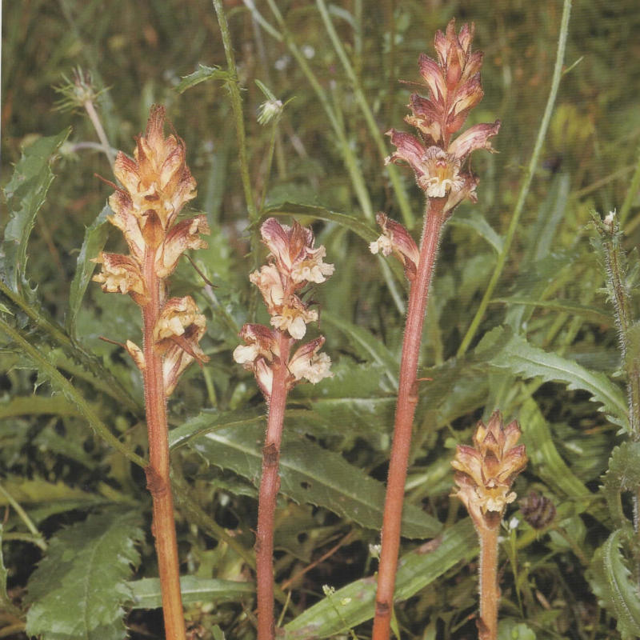
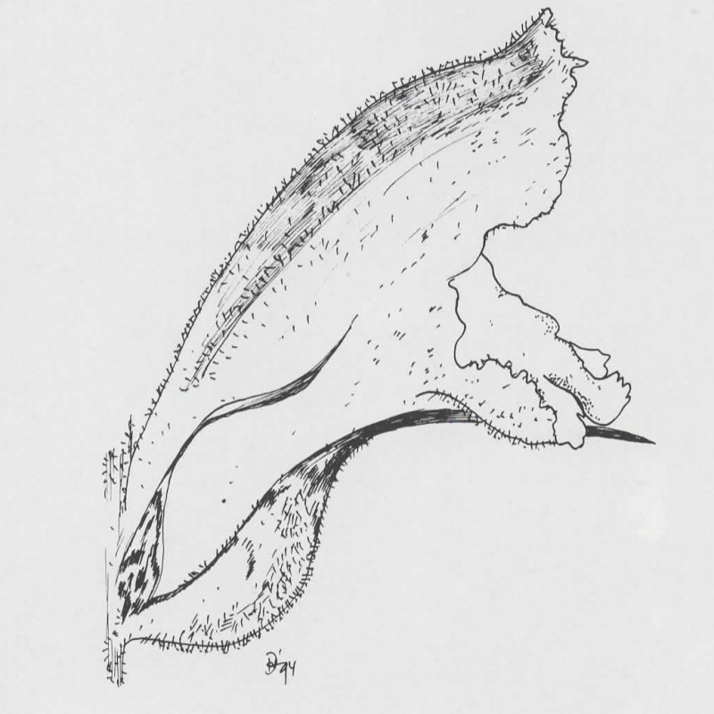

Orobanche reticulata
- Common name
- Thistle Broomrape
- Family
- Orobanchaceae
- Family common name
- Broomrape family
- Blooms
- April - September
- Habitat and host use
- Orobance reticulata grows mainly in stony alpine grassland, among thistle, sometimes sedges and rushes, often on alkaline and/or nutrient-rich stony-loamy soil. Hosts are Cirsium eristhales, Carlina acaulis, Scabiosa lucida, Carduus defloratus and Knautia dispacifolia.
Orobance reticulata can not be mistaken for any other species, because of the color of its flowers (yellow only at the base, violet-purple in other parts), its densely glandular-pubescent corolla and its calyx-segments, which are nearly always entire.
Range Map